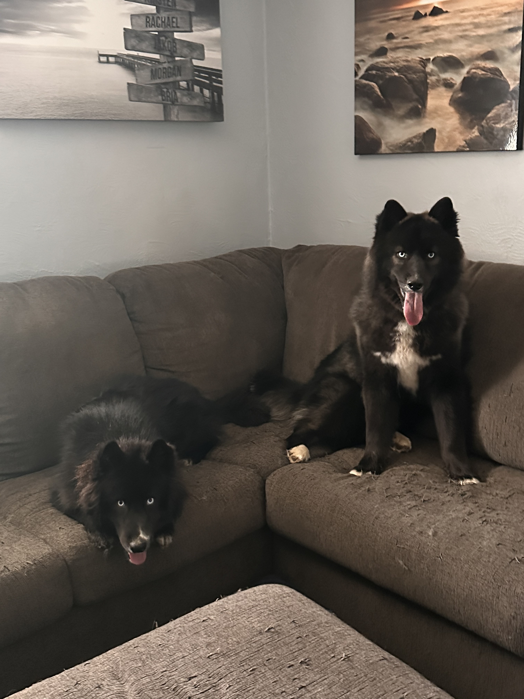
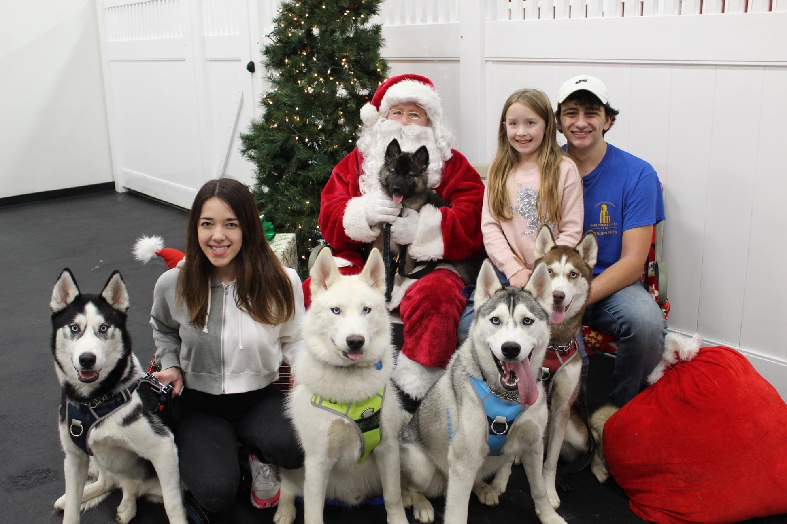

I am a recent graduate from the University of Pittsburgh with a Bachelor of Science degree in Physics & Astronomy. Throughout my academic career at Pitt, I
participated in various research projects in the field of stellar astronomy. In my most recent project, I explored the field of asteroseismology in studying
solar-like oscillating red giants in hopes of developing a tool to better constrain the asteroseismic parameter nu_max, or the star's characteristic oscillation
frequency. This project is in its final stages where I am actively debugging the results from Python's Empirical Mode Decomposition (EMD) package. To learn more,
head over to my research tab.
I am actively in the job market for an entry level software engineering position. Ideally, I would be working in the aerospace industry focusing on writing code that
directly has an impact on vehicles that are being sent up into space. Although I would prefer a full-time position, I am open to any experience in the form of internships.
I am a highly motivated, self-starting individual who wants to make an impact in the scene of interplanetary travel.
My main experience comes in the form of astronomy research and my extensive computer science coursework. I opted for the minor in computer science, however, I have
completed almost every portion of the B.S. in CS except my capstone project and a few courses. Key courses I completed through Pitt's CS department include
Data Structures
Computer Organization & Assembly
Introduction to Systems Software
Algorithm Implementation
Programming Language for Web Applications
Interface Design Methodology
Introduction to Data Science
Principles of Computer Game Design and Implementation
Introduction to Machine Learning
and others. I have also completed various upper level physics & astronomy courses such as
Data Science and Statistics (Graduate)
Galaxies and Extragalactic Astronomy (Graduate)
Stars, Stellar Structure & Evolution
Mechanics
Quantum Mechanics
I spend a lot of time practicing my coding skills. My strongest languages include Python, Java and R. while I am familiar with C, HTML, CSS and JavaScript.
I am actively developing a data processing pipeline for the Allegheny Observatory. This project has been in the works for a couple years now, but my time has mostly
been spent observing using the 24" telescope and collecting data on quasars in hopes of setting up a long-term QSO monitoring pipeline. I am collaborating with
Pitt Alumnus Justin Holt on this project where we are both getting hands on experience with the software development lifecycle.
I am most passionate about my dogs. We have eight dogs in our pack, seven of which are huskies. Almost two years ago, I adopted my boy Maverick and haven't looked
back since. One day, I hope to be able to rescue huskies from shelters and rehome them with families that will properly care for these beautiful dogs. I hope to
have enough land to start my own sanctuary so I am able to bring these dogs back into good health.

Maverick (right) and his sister Nikita!
When I am not working on school work or working on my research, I mostly spend my time playing volleyball. I played as the libero for the
Pitt Men's Volleyball Club (PMVBC)'s A-Team. I have been a part of a few intramural teams and also play casually whenever possible on the lawn
of the Cathedral of Learning at Pitt. If I am not playing volleyball, you may find me skiing at Seven Springs during ski season or simply at my computer
speedrunning my favorite video games. I am also trying my best to get into astrophotography, so a lot of my more recent time has been spent researching various
cameras, star trackers and telescopes.

Koda (black), Morgan (sister), Luka (white), Santa holding Mishka, Anakin (grey), Kaya (red), Bria (sister) and Me!
Research
Research Interests
My research interests are rooted in stellar astrophysics. I have experience working with asteroseismic data (KEPSEISMIC & APOKASC) probing red giants for information
such as details about their rotation periods used for gyrochronology and frequency of maximum power directly in asteroseismology. In previous work, I have also
looked at the close binary fraction of red clump stars. See below for more details about the projects I am involved with.
Upcoming Projects
Studying the Effects of Shadow Bands (Fall 2022 - Spring 2023)
Faculty: Prof. Russell Clark, Prof. Istvan Danko, Prof. Sandhya Rao, Prof. David Turnshek
Previous data has been collected to confirm the existence of a shadow band effect during solar eclipses. With the two upcoming solar eclipses in
October 2023 (annular) and April 2024 (total) crossing paths near San Antonio, TX, we plan to use NASA funded equipment to study this effect in
greater detail. We consider two approaches: launch High Altitude Balloons (HABs) to study light variations due to shadow bands
and launch weather balloons with radiosondes to study any relationship to turbulence. The team consists of four faculty members, two staff members,
three consulting faculty and ten undergraduate students at the University of Pittsburgh. I will be working primarily on the team launching the weather
balloons with radiosondes.
Current Projects
Research Experience for Undergraduates (REU) at University of Hawai'i Institute for Astronomy (IfA) (Summer 2023)
Advisor: Prof. Jen van Saders and Dr. Marc Hon
I am currently working with 30 minute long cadence Kepler data looking to develop a more reliable method of measuring the quantity νmax which is used to describe
stellar parameters as it is related to the mass, effective surface temperature and radius of the star. We are looking to move away from the need to transform our
time series data into the frequency domain as this method requires fitting for a complicated background model to describe the "noise" of the frequency oscillations.
Using the instantaneous frequencies of the pulsations, our method will be purely empirical.
Research Experience for Undergraduates (REU) at University of Florida (Summer 2022)
Advisor: Prof. Jamie Tayar
In 2016, Jennifer van Saders provided evidence that current stellar rotation models are predicting a higher rotation period than what has been observed due to a
phenomenon known as weakened magnetic braking. This discovery has implications for a wide variety of astronomical subfields as using stellar rotation periods
is one of the most popular methods of probing stellar ages, and thus interpolating various stellar parameters. The accuracy of gyrochronology method is crucial
to confirm that these ages are precise as possible. Using a combination of Kiauhoku interpolation grids
and APOGEE DR17 data, I have shown that there is still a discrepancy between empirical and theoretical rotation periods.
Corner plot showing output of stellar parameters for KIC757450. We were able to recover known stellar parameters with a high enough precision to infer the
rotation period and age of the star.
Red Clump Stars' Unlikely Binary Companions (Fall 2021 - Spring 2022)
Advisor: Prof. Carles Badenes
Using the APOGEE Data Release 16, I have investigated properties about core helium (red clump) binary systems. In particular, I analyzed red clump stars
with a particularly high change in radial velocity, which is an indicator that these stars still contain a short period binary companion.
This is not something expected as the secondary star should have been engulfed by the red clump star during its evolution through the red giant branch, especially
at the shorter periods that we are observing.
APOGEE DR16 red clump binary spectrum
Survey of Transiting Extrasolar Planets at University of Pittsburgh (STEPUP)
Advisor: Prof. Michael Wood-Vasey
STEPUP observes and collects data from stars predicted to have an exoplanet in its orbit. We analyze data by
producing light curves to detect planetary transits. Learn more about STEPUP and what I do here!
Sample light curve produced from STEPUP data for the star HAT-P-3
STEPUP
STEPUP is the Survey of Transiting Extrasolar Planets at the University of Pittsburgh that uses the Allegheny Observatory’s Keeler 24” telescope
to detect extrasolar planets (exoplanets). We take observations (weather permitting) and collect data about stars that we then analyze to determine
if there is actually a planet in the host star's orbit. To do this, we currently perform Instrument Signature Removal (ISR) with our data processing
pipeline, SIA (STEPUP Image Analysis), and perform photometry using an external program known as AstroImageJ. We take the output file from AIJ to
produce light curves for our analysis. Click here to learn more about STEPUP!
I serve as the current Data Processing Lead for STEPUP. Our current objective is to create a more efficient data processing pipeline that can properly process
data from the Allegheny Observatory’s new 24" Keeler PlaneWave telescope. Our old pipeline has been experiencing issues moving to a higher field of view CCD
during the astrometry process. I plan to create a pipeline using the SIA framework with an improved performance. To do this, I am working with Dr. David Turnshek
monitoring quasars for long term variability. The pipeline should work for both the quasar and exoplanet differential photometry, but it is too early to confirm.
Contact
Feel free to email me at jmb442@pitt.edu if you have any questions about my current work!